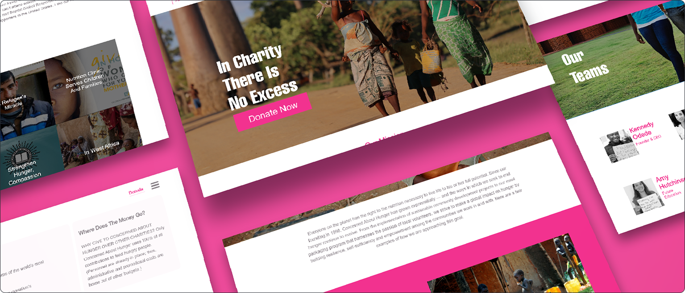
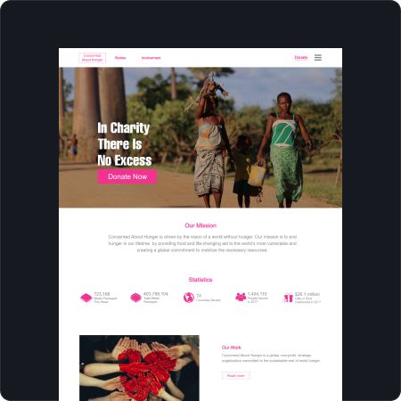
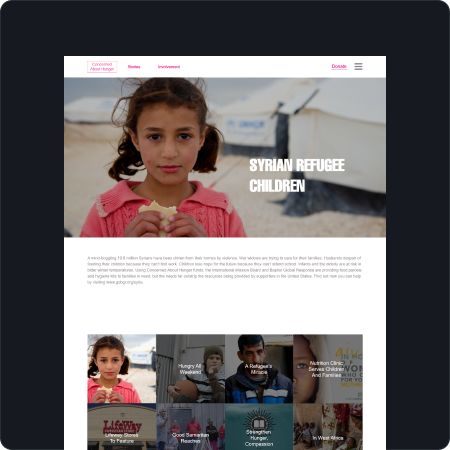
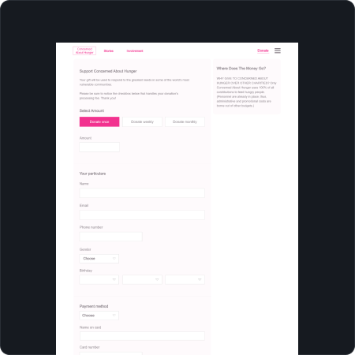
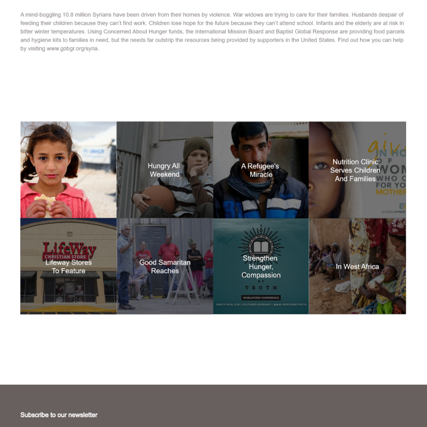
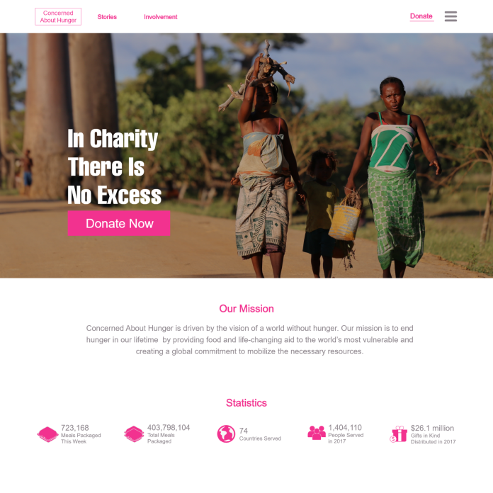
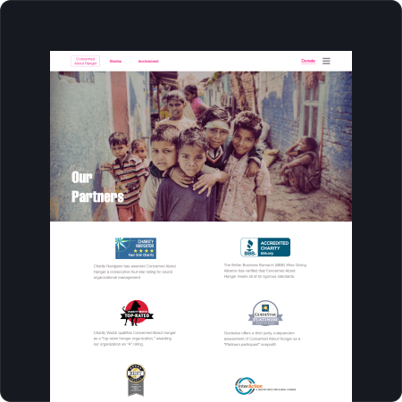
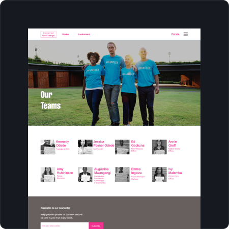
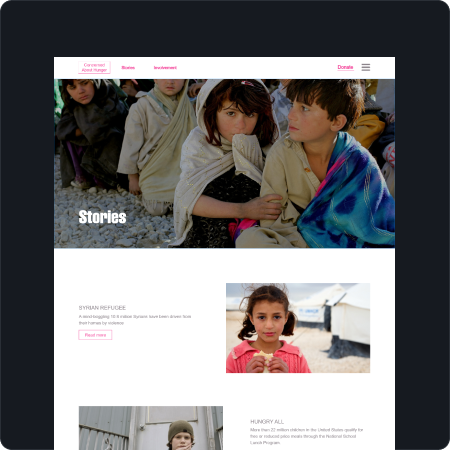

Concern For Hunger is an organisation focused on addressing global hunger. The website was designed to help users learn about its mission, explore impact stories, and make donations easily.




Scalable Story Layout
Designed a modular content system for the story page, allowing new content and success stories to be added without breaking layout consistency.
Clear Content Hierarchy & CTA Placement
Structured the homepage to prioritise key actions, with a clear above-the-fold CTA supported by credibility elements to build trust and encourage donations.




